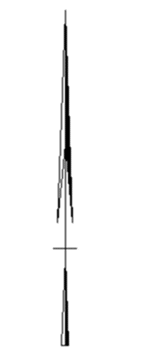
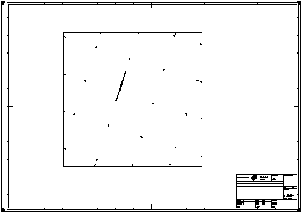

Op plattegronden, situatietekeningen, detailtekeningen en terreinmodellen de oriëntatie van een afbeelding ten opzichte van het noorden aangeven d.m.v. een noordpijl. De noordpijl wijst naar het noorden. Het heeft de voorkeur om de tekening zo te maken, dat de noordpijl bij benadering naar de bovenzijde van het tekening wijst.
De noordpijl volgens onderstaande vorm tekenen.

Op terreinmodellen de oriëntatie ten opzichte van de wereldcoördinaten aangeven met een grid van ruitkruisjes. De numerieke waarden van de wereldcoördinaten langs het kader van het terreinmodel plaatsen. Het lettertype van deze tekst is conform de richtlijn met een letterhoogte van 1.8 mm. Het ruitkruisje volgens onderstaande vorm tekenen.
Voorbeeld van tekening met noordpijl en ruitkruisjes

 AutoCAD Orientatie aanduidingen
AutoCAD Orientatie aanduidingen